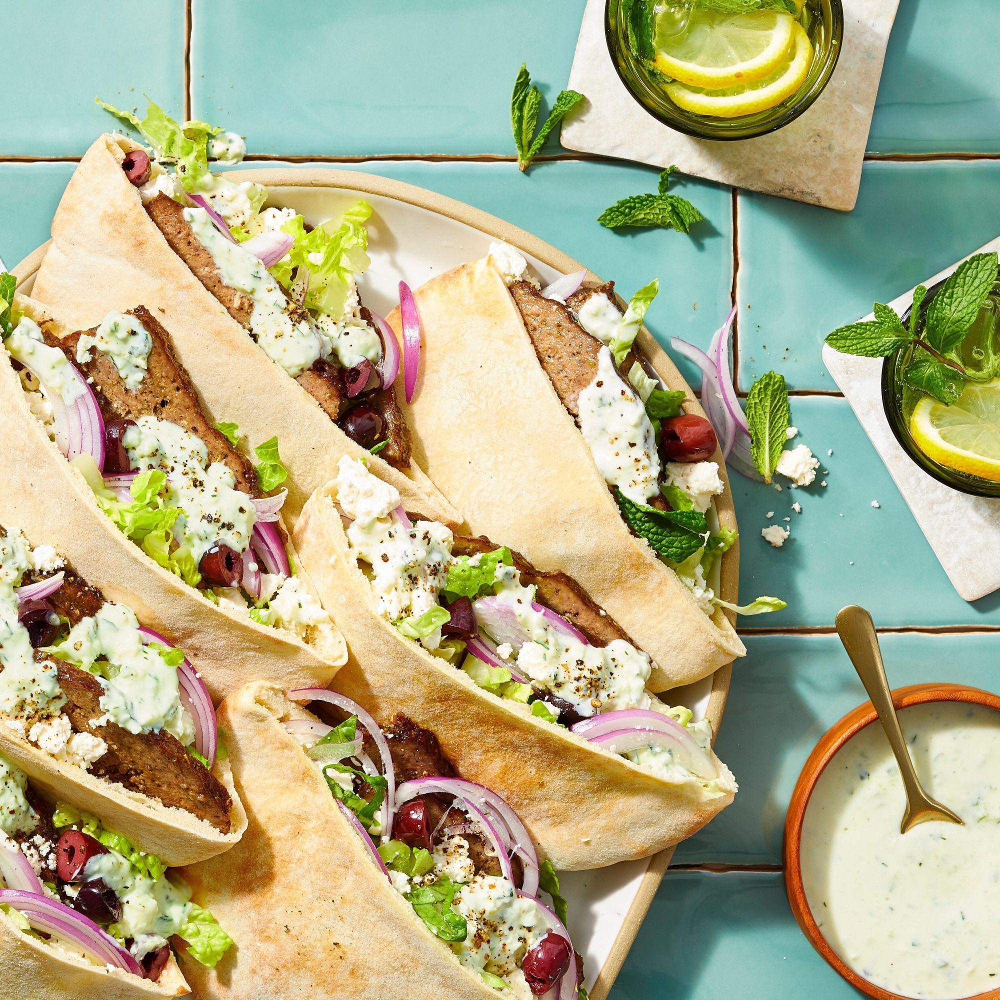

Gyros recipe

Description
The best greek gyros you can make. Taste the authentic greek flavours straight from your kitchen!
Ingredients
- 1/4 cup chopped red onion
- 1 tbsp minced garlic
- 1 tbsp dried marjoram
- 1 tbsp ground dried rosemary
- 2 tsp kosher salt
- 1/2 tsp freshly ground black pepper
- 1 pound 93%-lean ground beef
- 1 pound ground lamb
Steps
- Preheat oven to 350 degrees F (175 degrees C).
- Process red onion in a food processor until finely minced. Scoop onion into a piece of cheesecloth and squeeze it to release as much moisture as possible.
- Return onion to the food processor. Add garlic and process until the garlic is well integrated. Blend in marjoram, rosemary, salt, and pepper.
- Gradually blend ground beef and ground lamb with the onion and seasoning mixture by alternately adding small amounts of each meat to the mixture and processing until well incorporated before adding the next batch.
- Firmly pack the meat mixture into a 9x5-inch loaf pan, assuring no air pockets are trapped in the meat.
- Bake in the preheated oven until no longer pink in the center, about 1 hour 15 minutes. An instant-read thermometer inserted into the center should read at least 175 degrees F (80 degrees C).
- rain grease and slice thinly to serve